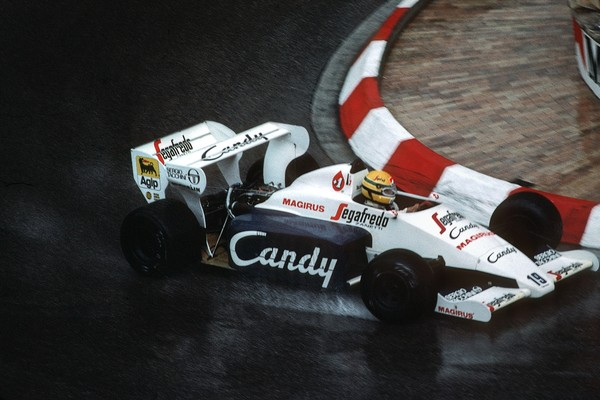
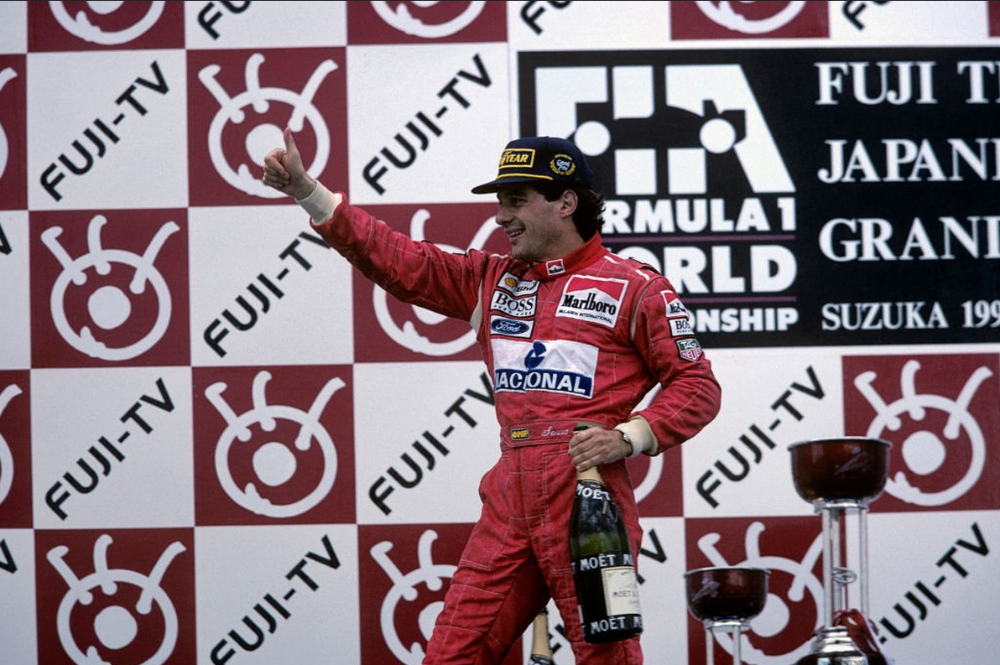
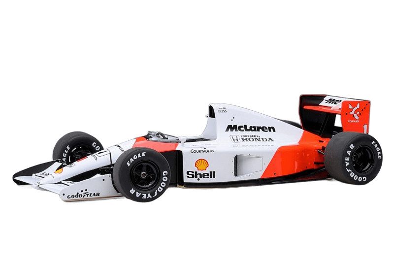
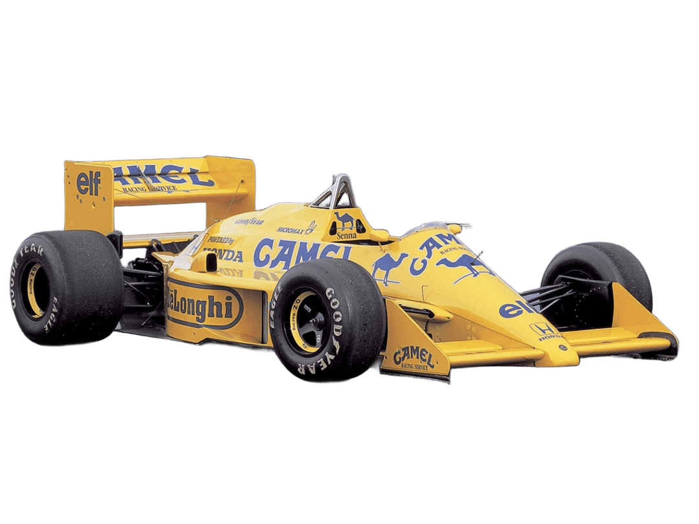

Ayrton Senna
Conquistas
3
Títulos Mundiais
1988, 1990, 1991
Clique para saber mais
41
Vitórias na F1
Em 161 corridas disputadas
Clique para saber mais
65
Pole Positions
Recorde na época
Clique para saber mais
80
Pódios
50% de aproveitamento
Clique para saber mais
19
Voltas Mais Rápidas
Velocidade incomparável
Clique para saber mais
1
Rei da Chuva
Mônaco 1984 - Lenda
Clique para saber mais
Trajetória
1973-1977
Início no Kart

Aos 13 anos, Ayrton recebe seu primeiro kart e inicia sua jornada no automobilismo.
Campeão Sul-Americano de Kart em 1977.
1981-1982
Fórmula Ford

Mudança para a Inglaterra para competir na Fórmula Ford.
Campeão em 1981 com 12 vitórias em 20 corridas.
1983
Fórmula 3 Britânica

Domínio absoluto na F3, conquistando o título com
12 vitórias em 20 corridas.
Vitória épica em Silverstone na chuva.
1984
Estreia na F1 - Toleman

Primeira temporada na Fórmula 1. Destaque para
Mônaco 1984 - 2º lugar na chuva,
performance que o consagrou mundialmente.
1985-1987
Lotus - Primeiras Vitórias

Primeira vitória em Portugal 1985.
Total de 6 vitórias pela Lotus, estabelecendo-se como um dos melhores pilotos do grid.
1988-1993
McLaren - Era Dourada

Parceria histórica com a McLaren. 3 títulos mundiais
(1988, 1990, 1991) e rivalidade épica com Alain Prost. 35 vitórias em 6 temporadas.
1994
Williams - Último Capítulo

Mudança para a Williams em busca do 4º título.
Imola, 1º de maio de 1994 -
O mundo perde uma lenda do automobilismo.
Carros Icônicos

McLaren MP4/4
1988
O carro do primeiro título mundial. Venceu 15 das 16 corridas da temporada,
estabelecendo um recorde de dominância na F1.

Lotus 97T
1991
O carro do terceiro título. Famoso pela vitória emocionante no GP do Brasil,
onde Senna venceu em casa com câmbio travado.

Lotus 98T
1985
O carro da primeira vitória. Em Portugal 1985, Senna conquistou sua primeira
vitória na F1 sob chuva torrencial.